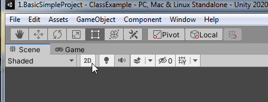
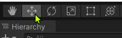
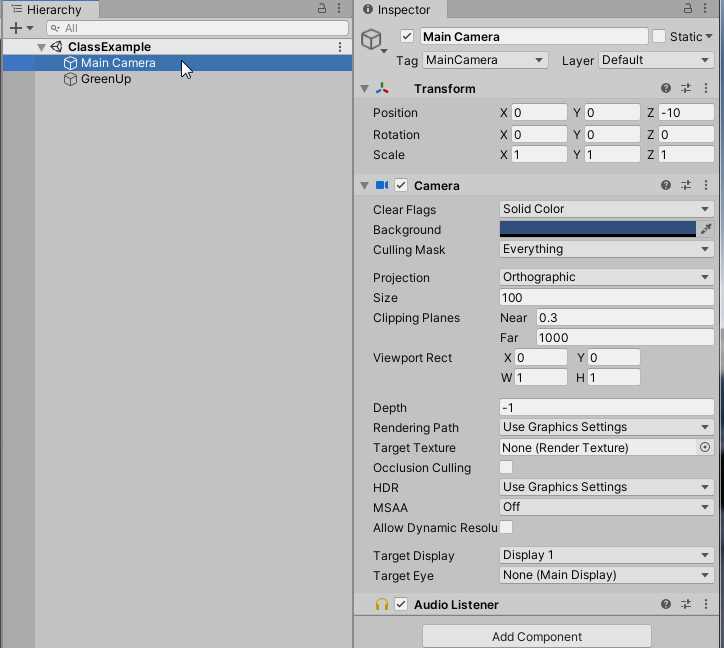
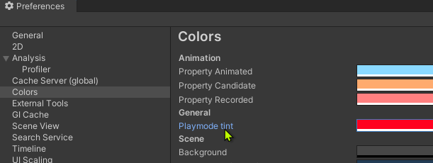

Introduction + Warm Up
Coverage
⎇GitHub
- Branch / fork
- The only four folders a Unity project needs
▶Basics
- Open and work with the Unity editor
- Set up a 2D camera, including world size
- Build to EXE and WebGL
- Host a WebGL game
⌨User interaction
- Polling keyboard states
◆Unity objects
- Textures and 2D sprite objects
- Attach scripts (MonoBehaviour objects)
- Use the Transform to change position
To save a Unity project, you only need these four folders
There's no reason to push the other folders to GitHub (or to submit them). Unity or your code editor regenerates them, or, like Builds, they only hold build output:
Setup & tools
Unity
Download and install Unity 3D. See Unity installation help. Note the version I'm using; for this class I see no reason to update to a newer one.
Online tools
Hosting a web page: in Part 2 you'll host WebGL builds for your assignments and projects. A free and convenient way to host your own page is GitHub Pages ↗.
Git and GitHub
- At the very minimum, fork the provided repository so you'll know when there are changes.
- Do not start Unity yet. Instead, open the GitHub folder in File Explorer.
-
Observe the Unity project folder
1.1.BasicSimpleProject. It has five subfolders:AssetsPackagesProjectSettingsUserSettingsEXE- You only need to pay attention to Assets. Keep all the resources you create in this folder.
- EXE holds the build result of the project.
- The other three folders track the state of your Unity editor.
-
Observe: now open
1.1.BasicSimpleProjectwith Unity. After the project opens, many new folders appear, includingLibrary,LogsandTemp.- None of these new folders are needed to save or retrieve your work.
- They do speed up Unity's startup, but please do not submit them and do not push them to GitHub.
If you're using the free version of GitHub, theLibraryfolder may be too large to push and can lock up your repo.
Temp, obj, Library, Logs, Builds.
Examples for Module 1
Basic Simple Project
Open the scene
- Examine the file system (outside of Unity) and compare to the Project panel (Window › Panels › Project).
- Notice the Assets and Packages folders: these are exact views of the file system we examined in File Explorer.
- Click Assets, then Scenes.
- Double-click ClassExample. This is our initial scene (level).
- Make sure you're working in 2D by clicking the 2D option at the top left of the Scene window.

The many editor windows
| Window | Purpose |
|---|---|
| Game | For playing. Try it: click the Play button |
| Scene | For editing |
| Hierarchy | Examine your entire scene (all objects are listed here) |
| Inspector | Examine the details of the selected object |
| Project | The view into the file system we saw earlier, where your stuff is kept |
| Console | Errors from Unity and debug output from Debug.Log |
Configure the editor
- Drag the tab of the Game window. You can detach the window!
- Put the Game and Scene windows side by side.
- Scene window: make sure you can see the camera boundaries.
- Resize the Game window and notice how the camera boundaries in the Scene window update to match the Game window's aspect ratio.
- This leads us to talk about the camera.
2D environment: Main Camera settings
Click the Main Camera object in the Hierarchy window and look at the Inspector window (both can be opened via Window › General).
- Switch to 3D mode and see that the camera defines a rectangular box in the world. The content of that box is what gets shown.
- Alt + Left mouse: tumble the 3D editor camera
- Middle mouse scroll: zoom in/out
- Click the manipulator button to activate the move tool; notice the rotate and scale tools too.

- Notice the Transform values in the Inspector, in particular the Position. That's the camera's position. Try changing it:
- Move the camera with the move tool (drag the arrows), or
- Type values into
Transform.Positionx/y/z.

Initial camera settings
| Setting | Value |
|---|---|
| Position | (0, 0, -10) |
| Rotation | (0, 0, 0) |
| Projection | Orthographic |
| Size | 100: half the world's vertical size, from the middle of the screen to the top of the Game window |
| Clipping Planes | Near: 0.3 is good. Far: 1000 |
- ±100 in height (so the total vertical size is actually 200)
- Left/right is X (
transform.rightis the unit X vector) - Up/down is Y (
transform.upis the unit Y vector) transform.forwardis the Z axis direction
Textures (a fancy name for images)
- Drag any image into the Project folder. Note: this copies the image into the project folder.
- I created the Textures subfolder and dragged GreenUp into it.
- Select the GreenUp texture by clicking on it in the Textures subfolder and examine the Inspector window.
- Make sure Texture Type is set to Sprite (2D and UI).
- Note the Pixels Per Unit setting. E.g., a 1000×500 image with Pixels Per Unit of 100 appears as a 10×5 object.
2D sprite objects
- Most (if not all) of the objects we work with will be Sprite (2D and UI) objects. The “Arrow” is a 2D sprite.
- Create one with GameObject › 2D Object › Sprite.
- Drag the texture from
Project/Assets/Texturesonto SpriteRenderer › Sprite. - Make the arrow 10×10 (otherwise you can't see it; 1×1 is hard to see). Note: the z size is always 1.
- Alternatively, simply drag the GreenUp texture into the Scene window.
Size of the visible world (the Game window)
- What is the height of the Game window?
- No! Not in pixels, but in object coordinates (world coordinates).
- Try changing the GreenArrow's
Transform.Position.yto 100. What do you see, and why?
- What is the width of the Game window? Try resizing the Game window and watch the camera boundary change!
- How can we find out?
- We need the Game window's pixel resolution to compute the aspect ratio!
Editor vs Play mode
| Mode | What it is |
|---|---|
| Editor | Typical editing |
| Play | When the game is running inside the editor |

Build your game
Make sure you know how to build:
- To a PC EXE that you can download, unzip, and run by double-clicking the EXE.
- To WebGL, which runs in your browser.
- Building WebGL takes a long time.
- Make sure you learn and practice how to host your own Unity WebGL game.
- Open a Unity scene
- Set up a 2D camera and the size of the visible world
- Create new textures for 2D sprite objects
- Manipulate 2D sprite objects through the editor
- Key editor windows:
- Game: what's visible through the Main Camera
- Scene: interactive editor window
- Hierarchy: list of all objects in the scene
- Inspector: details of the currently selected object
- Project: convenient view into the file system for working with resources
- Console: error and status messages (handy settings: Clear on Play and Collapse)
- Editor vs Play mode: Play mode changes are not saved!
- The Main Camera is at
(0, 0, -10)with Near0.3and Far1000. You move GreenUp to(0, 0, -20). Can you see it in the Game window? Why or why not?Show answer
No. The camera looks toward +z, so it only sees objects between z = -9.7 (0.3 in front of it) and z = 990 (1000 in front of it). At z = -20, GreenUp is behind the camera. The same object at z = 0, or even z = 500, would be visible.
- You zoom in the Scene window until GreenUp fills the view, then press Play. Does GreenUp also fill the Game window?
Show answer
No. The Scene window has its own editor camera, which only you use while editing. The Game window always shows what the Main Camera sees, so zooming the Scene window changes nothing for the player.
- After building to a PC EXE, a classmate emails you only
1.1.BasicSimpleProject.exe. It won't run. What's missing?Show answer
The rest of the build folder: the
1.1.BasicSimpleProject_Datafolder (the game's scenes and assets),UnityPlayer.dll, and the other files beside the EXE. The EXE is only a small launcher, which is why the build is shared as a zip of the whole folder.
Entity-Component-System (ECS) and Unity
A conceptual understanding of the Unity engine: every object in a scene is an entity built from components, and Unity's systems do the work of running them.
The three ideas in the editor and in code
| ECS idea | In the editor | In code | In example 1.2 |
|---|---|---|---|
| Entity | An object in the Hierarchy | GameObject; gameObject inside a script | GreenUp |
| Component | Each block in the Inspector | Transform, SpriteRenderer, any MonoBehaviour you write | Transform, SpriteRenderer, GreenArrowBehavior |
| System | Not visible: it's the engine | Unity calling Awake(), Start(), Update(); the renderer; physics | Unity calls GreenArrowBehavior.Update() every frame; the Camera draws GreenUp's SpriteRenderer |
What an entity is made of
- A GameObject on its own does nothing. It's a named container; everything it is and does comes from its components.
- Every GameObject has a Transform. The other components decide what kind of object it is: a Camera component makes a camera, a SpriteRenderer makes something visible.
- Your script is just one more component. That's why you attach it with Add Component, and why it can reach its neighbors with
GetComponent<T>().
Who calls your code
Awake() on every component, then Start() on every componentUpdate() on every script, e.g., GreenArrowBehavior.Update()- You never call
Update()yourself. Unity's systems find every component of a given kind and call it for you. Awake()of all objects runs beforeStart()of any object, soAwake()is the place to set up what other scripts will need in theirStart().- Don't write a constructor for a
MonoBehaviour. Unity creates the component itself; put your setup inAwake()orStart().
Try it: build behavior by adding components
Open example 1.2, press Play, and select GreenUp in the Hierarchy:
- In the Inspector, remove (or untick) GreenUp's Sprite Renderer. GreenUp disappears, but hold W: its Transform Position still changes. The script and the Transform are still there; only the "how it looks" component is gone.
- Add a component: Add Component › Physics 2D › Rigidbody 2D. GreenUp starts to fall. You added a new behavior, gravity, without writing any code.
- Stop the game. Both changes are undone, because Play-mode changes aren't saved.
- Select GreenUp in example 1.2. In ECS terms, what is the entity, what are the components, and what plays the role of the system?
Show answer
The entity is the GreenUp GameObject (its line in the Hierarchy). The components are the blocks in its Inspector: Transform, Sprite Renderer and GreenArrowBehavior. The system is Unity's engine: the scripting loop that calls
GreenArrowBehavior.Update()every frame, and the renderer that has the Main Camera draw GreenUp's Sprite Renderer. - You choose GameObject › Create Empty and press Play. What do you see in the Game window, and which components does the new object have?
Show answer
Nothing new appears: the object has only a Transform (a position, rotation and scale), and nothing that draws it. Add a Sprite Renderer and give it a sprite, and it becomes visible. Its look and behavior come entirely from the components you add.
- Instead, you remove GreenUp's GreenArrowBehavior (keeping the Sprite Renderer) and press Play. What changes?
Show answer
GreenUp is still drawn exactly where it was, but W A S D do nothing. The Sprite Renderer still gives it a look; the component that gave it behavior is gone. This is the opposite of the "Try it" step that removes the Sprite Renderer.
- You wrote a new script with an
Update()function, but it never runs. Your code doesn't callUpdate()anywhere. Name two likely reasons.Show answer
Unity's systems only call
Update()on script components that exist in the running scene, so check: (1) the script was never attached to a GameObject (it's only a file in the Project window); (2) the GameObject is inactive or the component is unticked in the Inspector; (3) the project has a compile error (see the Console), so the new code never loaded. CallingUpdate()yourself is never the fix. - A classmate sets up their script with a constructor,
public GreenArrowBehavior() { ... }. Why is that a bad idea, and where should the setup go?Show answer
Unity creates components itself, at times you don't control (including in the editor, and before the Inspector's values are filled in), so a constructor can run unexpectedly or have its work overwritten. Put setup in
Awake()(for the object itself) orStart()(when it needs other objects to be ready).
Scripts on GameObjects
Adding a script to an object
- Inspector window: Add Component, or
- Drag a script file onto the Inspector.
- Programming model: Entity-Component-System. A script is an instantiated
MonoBehaviourobject, stored as a component on a GameObject.
MonoBehaviour objects
Awake()/Start(): initialize your object.Awake()is guaranteed to be called before anyStart().Update(): called once per frame.
GreenUp has a GreenArrowBehavior script component
- Script file:
Project/Assets/GreenArrowBehavior.cs - Double-click it to open your IDE and examine the file.
Scene vs Game windows
- Scene window: for editing
- Game window: what your player will see
Run the game (the ▶ button at the top center of the editor)
- The script uses
using UnityEngine.InputSystem; - W A S D move the green arrow around.
- Verify that the top of the screen is
y = 100: with GreenUp selected, run and examine the Inspector. - What is the width of the world, and why?
- Verify that the top of the screen is
- Changes made while the game is running are not saved!
- With the game running, select GreenUp and delete it!
- Quit the game and see the object return.
Units of the world
- Independent of pixels!
- Defined by the camera's Size.
- How do we estimate “speed” (displacement per unit time)?
- How to add scripts (behaviors) to GameObjects
- ECS and the Unity architecture
- Scripts
- Programming model (ECS): an instantiated MonoBehaviour attached to a GameObject as a component
- Runtime protocol:
Awake()of all objects is called, thenStart()of all objects, then oneUpdate()per frame
- In the editor: changes made while the game is running are not saved!
- In the editor, you rotate GreenUp by 90 degrees (Rotation z =
90) so the arrow points left. You press Play and hold W. Which way does it move: up the screen, or in the direction the arrow points?Show answer
Up the screen.
GreenArrowBehavioraddskDeltatop.y, the y value oftransform.localPosition, which ignores the object's rotation. Moving in the direction the arrow points needstransform.up, which you'll use in Module 2. - You remove
GreenArrowBehaviorfrom GreenUp and attach it to the Main Camera instead. You press Play and hold W. What do you see in the Game window?Show answer
GreenUp appears to move down. The script now moves the Main Camera up, and the Game window shows what the camera sees, so everything in the world slides down the screen. A script is a component: it works on whichever GameObject it's attached to.
In-class self-exercise
- Follow the instructions and practice what we learned today.
- My solution is at the end of the document.